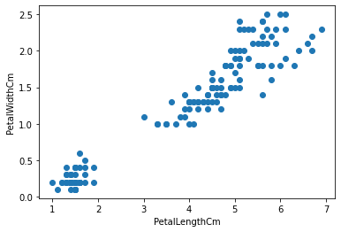
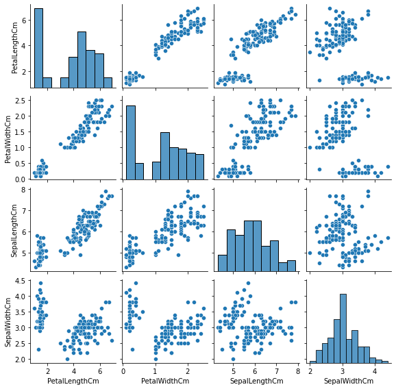

Section 5.1 Application: \(k\)-means Clustering
1 Imagine that you are an evolutionary biologist studying irises and that you have collected measurements on a large number of iris samples. Your goal is to identify different species 3 within this collection. (Source 4 )
Here is a classical iris dataset 5 first analyzed by the statistician Ronald A. Fisher 6 . We will upload the data in the form of a data table (similar to a spreadsheet) , where the columns are different measurements (or features) and the rows are different samples. Below, we load the data using
pandas.read_csv 7 and show the first \(5\) lines of the dataset (see DataFrame.head 8 ).\PY{c+c1}{\PYZsh{} Python 3}
\PY{k+kn}{import} \PY{n+nn}{pandas} \PY{k}{as} \PY{n+nn}{pd}
\PY{k+kn}{import} \PY{n+nn}{numpy} \PY{k}{as} \PY{n+nn}{np}
\PY{k+kn}{import} \PY{n+nn}{matplotlib}\PY{n+nn}{.}\PY{n+nn}{pyplot} \PY{k}{as} \PY{n+nn}{plt}
\PY{k+kn}{import} \PY{n+nn}{seaborn} \PY{k}{as} \PY{n+nn}{sns}
\PY{n}{df} \PY{o}{=} \PY{n}{pd}\PY{o}{.}\PY{n}{read\PYZus{}csv}\PY{p}{(}\PY{l+s+s1}{\PYZsq{}}\PY{l+s+s1}{iris\PYZhy{}measurements.csv}\PY{l+s+s1}{\PYZsq{}}\PY{p}{)}
\PY{n}{df}\PY{o}{.}\PY{n}{head}\PY{p}{(}\PY{p}{)}
Id PetalLengthCm PetalWidthCm SepalLengthCm SepalWidthCm
0 1 1.4 0.2 5.1 3.5
1 2 1.4 0.2 4.9 3.0
2 3 1.3 0.2 4.7 3.2
3 4 1.5 0.2 4.6 3.1
4 5 1.4 0.2 5.0 3.6
There are \(150\) samples (as can be seen by using
DataFrame.shape 9 which gives the dimensions of the DataFrame as a tuple). Each row in this data set can be seen as a vector (or point) in \(\R^4\) since it has four entries which are real numbers.\PY{n}{df}\PY{o}{.}\PY{n}{shape}\PY{p}{[}\PY{l+m+mi}{0}\PY{p}{]}
150
Let's first extract the columns into a Numpy array using
DataFrame.to_numpy() 10 , and visualize the petal data. Below, each point is a sample. This is called a scatter plot 11 .\PY{n}{X} \PY{o}{=} \PY{n}{df}\PY{p}{[}\PY{p}{[}\PY{l+s+s1}{\PYZsq{}}\PY{l+s+s1}{PetalLengthCm}\PY{l+s+s1}{\PYZsq{}}\PY{p}{,} \PY{l+s+s1}{\PYZsq{}}\PY{l+s+s1}{PetalWidthCm}\PY{l+s+s1}{\PYZsq{}}\PY{p}{,}
\PY{l+s+s1}{\PYZsq{}}\PY{l+s+s1}{SepalLengthCm}\PY{l+s+s1}{\PYZsq{}}\PY{p}{,} \PY{l+s+s1}{\PYZsq{}}\PY{l+s+s1}{SepalWidthCm}\PY{l+s+s1}{\PYZsq{}}\PY{p}{]}\PY{p}{]}\PY{o}{.}\PY{n}{to\PYZus{}numpy}\PY{p}{(}\PY{p}{)}
\PY{n}{plt}\PY{o}{.}\PY{n}{scatter}\PY{p}{(}\PY{n}{X}\PY{p}{[}\PY{p}{:}\PY{p}{,}\PY{l+m+mi}{0}\PY{p}{]}\PY{p}{,} \PY{n}{X}\PY{p}{[}\PY{p}{:}\PY{p}{,}\PY{l+m+mi}{1}\PY{p}{]}\PY{p}{)}
\PY{n}{plt}\PY{o}{.}\PY{n}{xlabel}\PY{p}{(}\PY{l+s+s1}{\PYZsq{}}\PY{l+s+s1}{PetalLengthCm}\PY{l+s+s1}{\PYZsq{}}\PY{p}{)}
\PY{n}{plt}\PY{o}{.}\PY{n}{ylabel}\PY{p}{(}\PY{l+s+s1}{\PYZsq{}}\PY{l+s+s1}{PetalWidthCm}\PY{l+s+s1}{\PYZsq{}}\PY{p}{)}
\PY{n}{plt}\PY{o}{.}\PY{n}{show}\PY{p}{(}\PY{p}{)}

We observe a clear cluster of samples on the bottom left. What is a cluster 12 ? Intuitively, it is a group of samples that are close to each other, but far from every other sample. In this case, it may be an indication that these samples come from a separate species.
Now let's look at the full dataset. Visualizing the full \(4\)-dimensional data is not straightforward. One way to do this is to consider all pairwise scatter plots.
\PY{n}{sns}\PY{o}{.}\PY{n}{pairplot}\PY{p}{(}\PY{n}{df}\PY{p}{,} \PY{n+nb}{vars}\PY{o}{=}\PY{p}{[}\PY{l+s+s1}{\PYZsq{}}\PY{l+s+s1}{PetalLengthCm}\PY{l+s+s1}{\PYZsq{}}\PY{p}{,} \PY{l+s+s1}{\PYZsq{}}\PY{l+s+s1}{PetalWidthCm}\PY{l+s+s1}{\PYZsq{}}\PY{p}{,} \PY{l+s+s1}{\PYZsq{}}\PY{l+s+s1}{SepalLengthCm}\PY{l+s+s1}{\PYZsq{}}\PY{p}{,} \PY{l+s+s1}{\PYZsq{}}\PY{l+s+s1}{SepalWidthCm}\PY{l+s+s1}{\PYZsq{}}\PY{p}{]}\PY{p}{,} \PY{n}{height}\PY{o}{=}\PY{l+m+mi}{2}\PY{p}{)}
\PY{n}{plt}\PY{o}{.}\PY{n}{show}\PY{p}{(}\PY{p}{)}

What would be useful is a method that automatically identifies clusters whatever the dimension of the data. In this chapter, we will discuss a standard way to do this: \(k\)-means clustering.
Clustering is the following fundamental problem in data science: we are given \(n\) vectors \(\mathbf{x}_1,\ldots,\mathbf{x}_n\) in \(\mathbb{R}^d\text{.}\) and we want to partition these data points into \(k\) disjoint subsets - or clusters - with small pairwise distances within clusters and large pairwise distances across clusters.
Fix a number of clusters \(k\text{.}\) Formally, we define a clustering as a partition.
A partition of \([n] = \{1,\ldots,n\}\) of size \(k\) is a collection of non-empty subsets \(C_1,\ldots,C_k \subseteq [n]\) that:
are pairwise disjoint, i.e., \(C_i \cap C_j = \emptyset\text{,}\) \(\forall i \neq j\) and
cover all of \([n]\text{,}\) i.e., \(\cup_{i=1}^k C_i = [n]\text{.}\)
We number the clusters \(C_1,\ldots,C_k\) for notational convenience, but their order is meaningless. Two partitions are the same if they are the same family of subsets.
For each cluster we pick a representative or center \(\boldsymbol{\mu}_i \in \mathbb{R}^d\) of the cluster \(C_i\text{.}\) Note that \(\boldsymbol{\mu}_i\) need not be one of the \(\mathbf{x}_j\)'s. Intuitively, clusters must posses the property that each of the points \(\x_j\) in the cluster \(C_i\) must be close in Euclidean distance to the center of the cluster, \(\boldsymbol{\mu}_i\text{.}\)
Let \(\v=(v_1, \ldots, v_d)\) be a vector in \(\R^d\text{.}\) Then the Euclidean norm of \(\v\) is
\begin{equation*}
\|\v\|=\sqrt{v_1^2+v_2^2+\cdots +c_d^2}
\end{equation*}
The Euclidean distance between points \(\x\) and \(\boldsymbol{\mu}\) in \(\R^d\) is
\begin{equation*}
\|\mathbf{x} - \boldsymbol{\mu}\|=\sqrt{(x_1-\mu_1)^2+(x_2-\mu_2)^2+\cdots +(x_d-\mu_d)^2}.
\end{equation*}
The aggregate of the distances of the points \(\x_j\) in our data sets to the centers of the clusters is defined below.
Fix vectors \(\x_1, \ldots, \x_n\in \R^d\text{.}\) For a partition \(C_1,\ldots,C_k\) of \([n]\) and cluster representatives \(\boldsymbol{\mu}_1, \ldots, \boldsymbol{\mu}_k\in \R^d\) the \(k\)-means objective function is
\begin{equation*}
\label{eq:kmeans}
G(C_1,\ldots,C_k, \boldsymbol{\mu}_1, \ldots, \boldsymbol{\mu}_k) =\sum_{i=1}^k \sum_{j \in C_i} \|\mathbf{x}_j - \boldsymbol{\mu}_i\|^2.
\end{equation*}
Our goal is to find a partition \(C_1,\ldots,C_k\) and also the cluster representetives \(\boldsymbol{\mu}_i\) that minimize
[cross-reference to target(s) "eq:kmeans" missing or not unique]. The \(k\)-means algorithm is a popular heuristic to solve this problem. It is based on the idea that the following two sub-problems are easy to solve:finding the optimal cluster representatives for a fixed partition;
finding the optimal partition for a fixed set of cluster representatives.
The \(k\)-means algorithm then alternates between the two steps until progress falls below a given tolerance. This is reasonable since our goal as stated above is to solve the minimization problem
\begin{equation*}
\label{eq:minkmeans}
\min_{C_1,\ldots,C_k} \min_{\boldsymbol{\mu}_1,\ldots,\boldsymbol{\mu}_k \in \mathbb{R}^d}
\sum_{i=1}^k \sum_{j \in C_i} \|\mathbf{x}_j - \boldsymbol{\mu}_i\|^2
\end{equation*}
where \(C_1,\ldots,C_k\) ranges over all partitions of \([n]\) of size \(k\text{.}\) Fixing partition \(C_1,\ldots,C_k\) and miniminizing over \(\boldsymbol{\mu}_1,\ldots,\boldsymbol{\mu}_k \in \mathbb{R}^d\) corresponds to solving the first problem above, while fixing \(\boldsymbol{\mu}_1,\ldots,\boldsymbol{\mu}_k \in \mathbb{R}^d\) and miniminizing over partitions \(C_1,\ldots,C_k\) corresponds to solving the second problem.
To elaborate on the first step above, we review an elementary fact about quadratic functions.
Let \(q(x) = a x^2 + b x + c\) where \(a > 0\) and \(x \in \mathbb{R}\text{.}\) The unique global minimum of \(q\) is attained at \(x^* = -\frac{b}{2a}.\)
We rewrite \(q\) as
\begin{equation*}
\begin{aligned}
q(x)
&= &a \left(x^2 + 2 \frac{b}{2a} x\right) + c\\
&=& a \left(x^2 + 2\frac{b}{2a} x + \left(\frac{b}{2a}\right)2\right) - a \left(\frac{b}{2a}\right)^2 + c\\
&= &a (x - x^*)^2 + c - \frac{b^2}{4a}.
\end{aligned}
\end{equation*}
Since \((x - x^*)^2\geq 0\) we see that this quantity is minimized when \(x=x^*\) and any other \(x\) gives a higher value for \(q\text{.}\) The step on the second line above is called Completing the Square 13 . \(\square\)
Fix a partition \(C_1,\ldots,C_k\text{.}\) The representatives \(\boldsymbol{\mu}_i\) which minimize the objective function
\begin{equation*}
G(C_1,\ldots,C_k; \boldsymbol{\mu}_1, \ldots, \boldsymbol{\mu}_k)
= \sum_{i=1}^k \sum_{j \in C_i} \|\mathbf{x}_j - \boldsymbol{\mu}_i\|^2,
\end{equation*}
are the centroids
\begin{equation*}
\boldsymbol{\mu}_i^* = \frac{1}{|C_i|} \sum_{j\in C_i} \mathbf{x}_j.
\end{equation*}
Using the notation \(\mathbf{x}_j = (x_{j1},\ldots,x_{jd})^T\) and similarly for \(\boldsymbol{\mu}_i\text{,}\) note that we can expand the \(k\)-means objective as
\begin{equation*}
\begin{aligned}
\sum_{i=1}^k \sum_{j \in C_i} \|\mathbf{x}_j - \boldsymbol{\mu}_i\|^2
&= \sum_{i=1}^k \sum_{j \in C_i} \sum_{m=1}^d (x_{jm} - \mu_{im})^2\\
&= \sum_{i=1}^k \sum_{m=1}^d \left[\sum_{j \in C_i} (x_{jm} - \mu_{im})^2\right].
\end{aligned}
\end{equation*}
The expression in square brackets is a quadratic function in \(\mu_{im}\)
\begin{equation*}
q_{im}(\mu_{im})
= \left\{\sum_{j \in C_i} x_{jm}^2\right\} + \left\{- 2 \sum_{j \in C_i} x_{jm}\right\} \mu_{im} + \left\{|C_i| \right\} \mu_{im}^2,
\end{equation*}
and therefore, by
[cross-reference to target(s) "lem:minquadratic" missing or not unique] is minimized at
\begin{equation*}
\mu_{im}^*
= - \frac{- 2 \sum_{j \in C_i} x_{jm}}{2 |C_i|}
= \frac{1}{|C_i|} \sum_{j \in C_i} x_{jm}.
\end{equation*}
Since each term \(q_{im}(\mu_{im})\) in the sum over \(i, m\) making up the objective function \(G\) is strictly minimized at \(\boldsymbol{\mu}_1^*,\ldots, \boldsymbol{\mu}_k^*\text{,}\) so is \(G\text{.}\)
Fix the representatives \(\boldsymbol{\mu}_1,\ldots,\boldsymbol{\mu}_k\text{.}\) The partition that minimizes the objective function
\begin{equation*}
G(C_1,\ldots,C_k; \boldsymbol{\mu}_1, \ldots, \boldsymbol{\mu}_k)
= \sum_{i=1}^k \sum_{j \in C_i} \|\mathbf{x}_j - \boldsymbol{\mu}_i\|^2,
\end{equation*}
is obtained as follows. For each \(j\text{,}\) find the \(\boldsymbol{\mu}_i\) that minimizes \(\|\mathbf{x}_j - \boldsymbol{\mu}_i\|\) (picking one arbitrarily in the case of ties) and assign \(\mathbf{x}_j\) to \(C_i\text{.}\)
If \(c\) is the cluster assignment associated to \(C_1,\ldots,C_k\text{,}\) then we can re-write the objective as
\begin{equation*}
\sum_{i=1}^k \sum_{j \in C_i} \|\mathbf{x}_j - \boldsymbol{\mu}_i\|^2
= \sum_{j=1}^n \|\mathbf{x}_j - \boldsymbol{\mu}_{c(j)}\|^2,
\end{equation*}
By definition, when the \(\boldsymbol{\mu}_i\)'s are fixed, each term in the sum on the right-hand side is minimized separately by the assignment in the statement. Hence so is the sum itself. Note that we used the fact that the square root is non-decreasing to conclude that minimizing \(\|\mathbf{x}_j - \boldsymbol{\mu}_i\|^2\) or its square root \(\|\mathbf{x}_j - \boldsymbol{\mu}_i\|\) are equivalent.
We now see that the \(k\)-means algorithm approaches a (local) solution to the problem
[cross-reference to target(s) "eq:minkmeans" missing or not unique].The sequence of objective function values produced by the \(k\)-means algorithm is weakly decreasing and hence converges to a (local) minimum of the function
[cross-reference to target(s) "eq:kmeans" missing or not unique].By the Optimal Representatives and Optimal Clustering lemmas, each step does not increase the objective. A sequence of real numbers that is weakly decreasing and bounded below (in our case by 0, as the distances are all non-negative) converges.
The \(k\)-means algorithm is only a heuristic. In particular, it is not guaranteed to find the global minimum of the \(k\)-means objective. However, it is guaranteed to improve the objective at every iteration, or more precisely, not to make it worse.
Adapted from notes by Sebastien Roch https://people.math.wisc.edu/\(\sim\)roch/mmids/notes.html 2
people.math.wisc.edu/~roch/mmids/notes.htmlen.wikipedia.org/wiki/Specieswww.w3resource.com/machine-learning/scikit-learn/iris/index.phpen.wikipedia.org/wiki/Iris_flower_data_seten.wikipedia.org/wiki/Ronald_Fisherpandas.pydata.org/docs/reference/api/pandas.read_csv.html?highlight=read_csv#pandas.pydata.org/docs/reference/api/pandas.DataFrame.head.htmlpandas.pydata.org/docs/reference/api/pandas.DataFrame.shape.htmlpandas.pydata.org/docs/reference/api/pandas.DataFrame.to_numpy.htmlen.wikipedia.org/wiki/Scatter_ploten.wikipedia.org/wiki/Cluster_analysisen.wikipedia.org/wiki/Completing_the_square